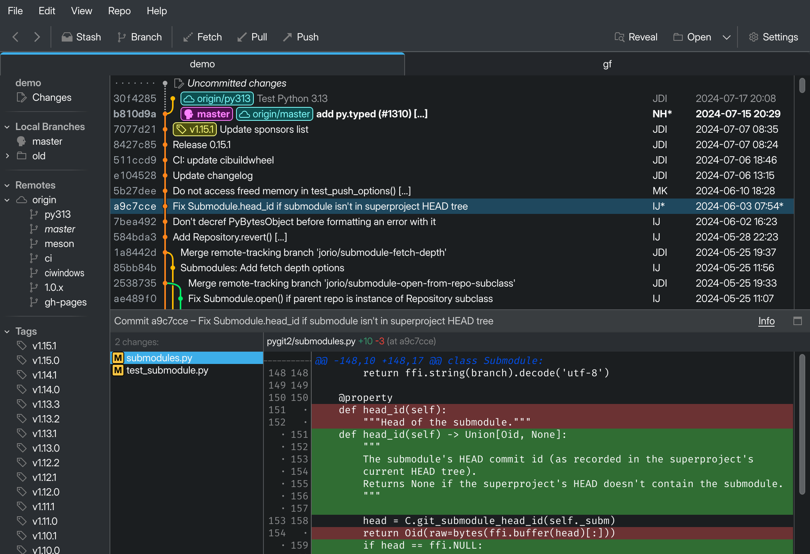
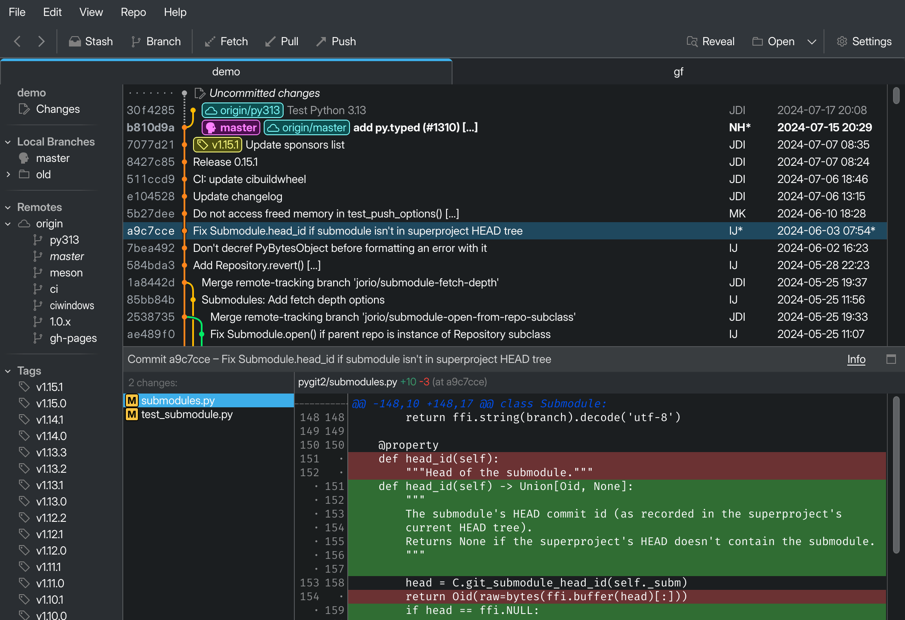

GitFourchette
The comfortable Git UI for Linux.
 

Explore your repos easily. Craft commits intuitively.
With its comfortable Qt UI, GitFourchette will become your new home to get work done in your Git repositories.